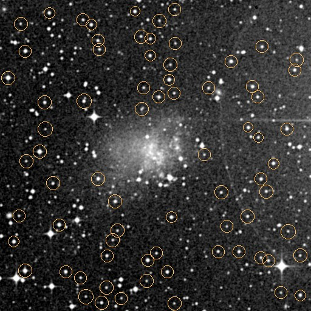
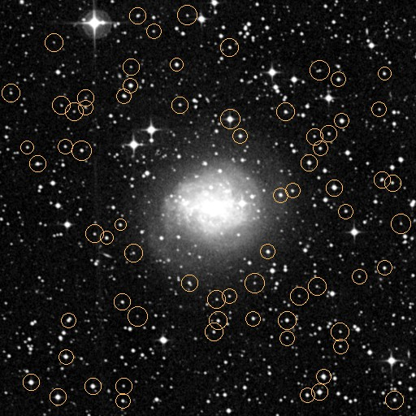
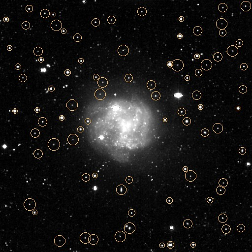
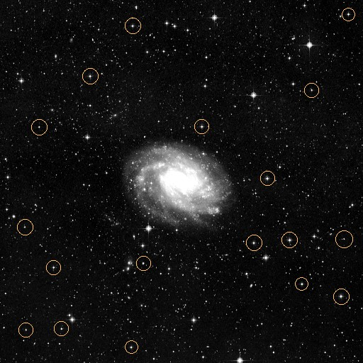
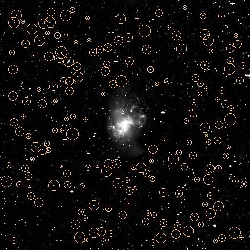
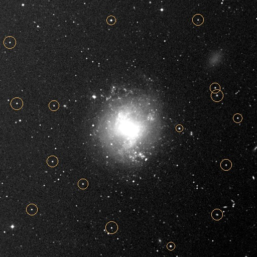
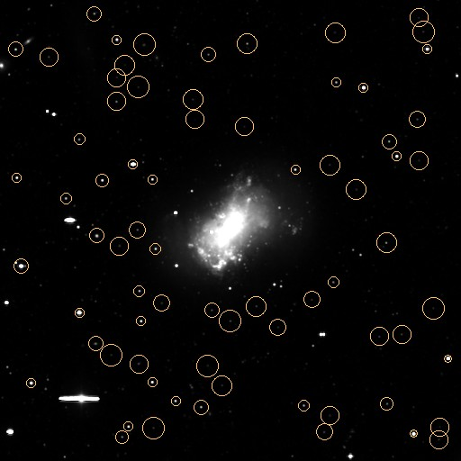
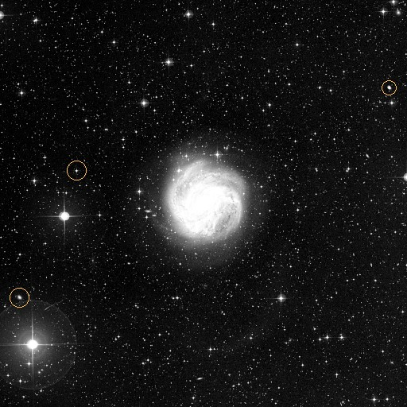
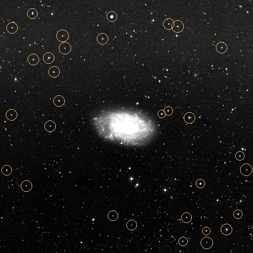
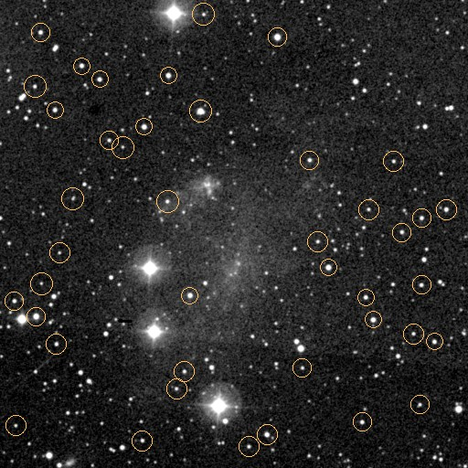

Experimental only: no galaxy pitches, model brightness, or original FITS data were changed. Compact source detections were made without Gaia, and the central 75 pixels were protected from automatic masking.
The FWHM values are unvalidated candidate estimates, not PSFs appropriate for GALFIT. Isolated stars must be verified against neighboring sources, saturation, and the true survey image resolution before refitting.
74 isolated-candidate detections, median provisional FWHM 4.31 pixels; pixel scale 1.10 arcsec/pixel. No final star mask applied.

77 isolated-candidate detections, median provisional FWHM 4.13 pixels; pixel scale 1.87 arcsec/pixel. No final star mask applied.

91 isolated-candidate detections, median provisional FWHM 3.27 pixels; pixel scale 2.20 arcsec/pixel. No final star mask applied.

18 isolated-candidate detections, median provisional FWHM 4.34 pixels; pixel scale 8.57 arcsec/pixel. No final star mask applied.

193 isolated-candidate detections, median provisional FWHM 2.89 pixels; pixel scale 5.67 arcsec/pixel. No final star mask applied.

19 isolated-candidate detections, median provisional FWHM 4.51 pixels; pixel scale 2.84 arcsec/pixel. No final star mask applied.

78 isolated-candidate detections, median provisional FWHM 3.63 pixels; pixel scale 2.25 arcsec/pixel. No final star mask applied.

3 isolated-candidate detections, median provisional FWHM unresolved; pixel scale 6.21 arcsec/pixel. No final star mask applied.

32 isolated-candidate detections, median provisional FWHM 4.43 pixels; pixel scale 4.71 arcsec/pixel. No final star mask applied.

46 isolated-candidate detections, median provisional FWHM 4.39 pixels; pixel scale 1.49 arcsec/pixel. No final star mask applied.
